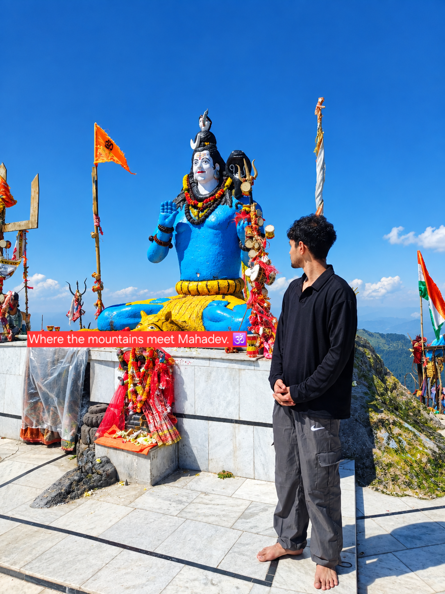
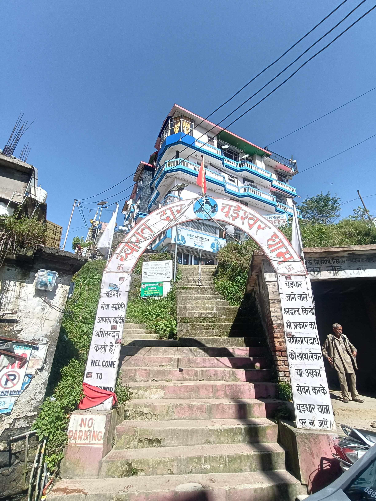
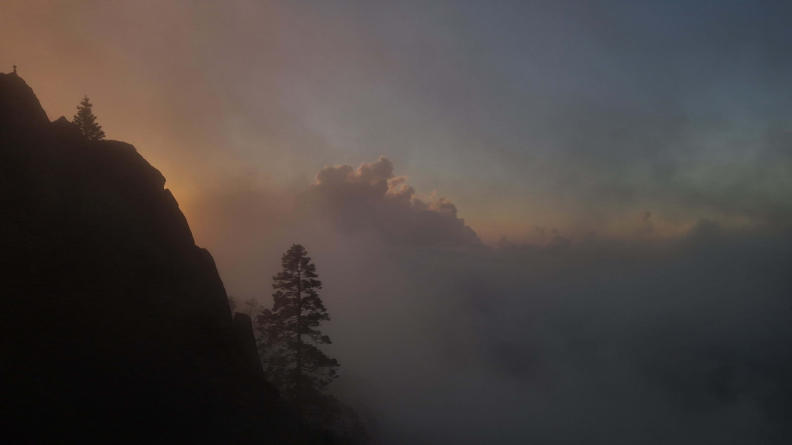
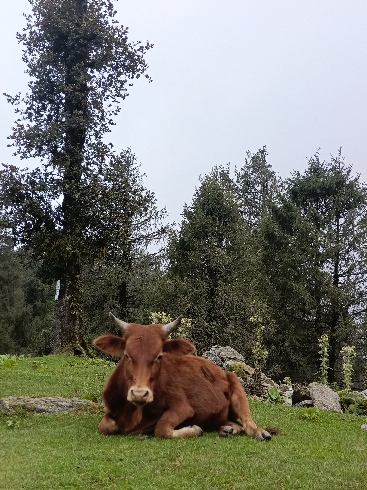
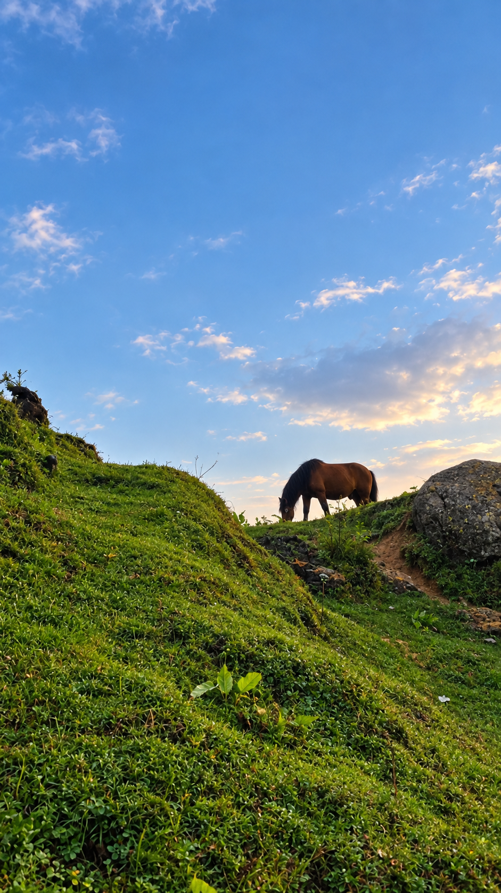
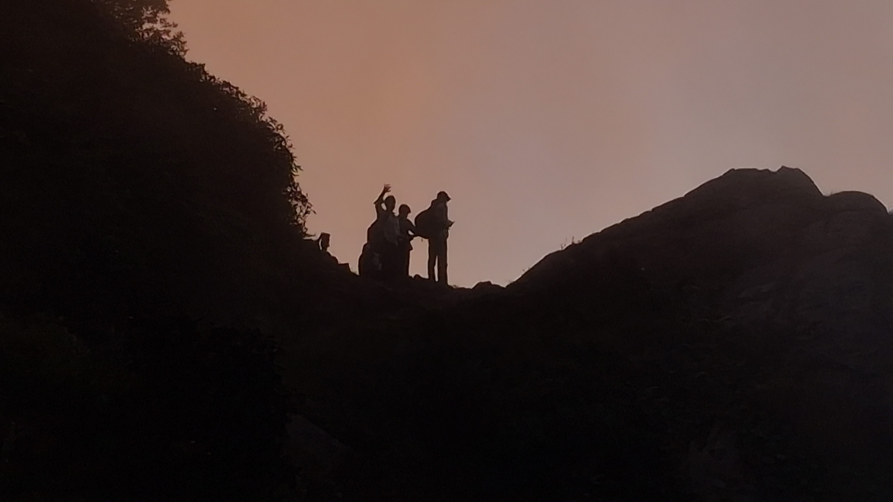
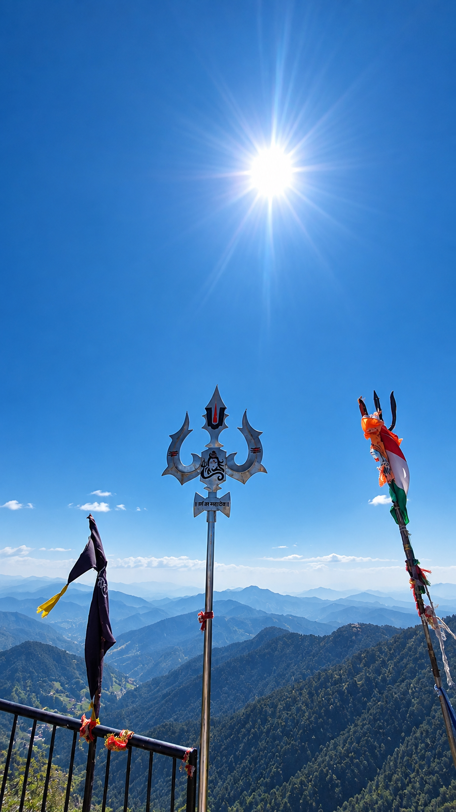

Churdhar Trek: My Journey from Nohradhar
18+ KM of mountains, forests, steep climbs and unforgettable memories

Some journeys are not measured only by the destination. They are remembered by every step, every climb, every tired moment and every view along the way. My recent Churdhar trek from Nohradhar was exactly that kind of journey.
Starting from Nohradhar, the trail took me deep into the mountains towards Churdhar Peak. It was a long and challenging trek, but the experience of walking through forests, open mountain sections and changing landscapes made every kilometre worth it.
🏔️ Destination: Churdhar Peak
📏 Distance: More than 18 km one way
🔄 Round Trip: Around 36 km
⛰️ Height: 3,647 metres / 11,965 feet
🥾 Difficulty: Hard / Challenging
🛕 Main Temple: Shirgul Mahadev Temple
The Journey from Nohradhar
The trek started from Nohradhar. At first, the trail passes through beautiful forest areas, but as we continued, the climb became steeper and the distance started testing our stamina.
The Nohradhar route is officially listed at around 18 km to Churdhar, making it a long mountain trek. With the return journey, the total distance is roughly 36 km.

More Than 18 KM on Foot
What makes this trek special is the distance. It is not just a short hike to a viewpoint. From Nohradhar, you have to cover more than 18 km to reach the Churdhar side, with continuous climbs and changing terrain.
After walking for kilometres, even small breaks become memorable. The tired legs, cold mountain air and beautiful views make the experience completely different from an ordinary trip.
Shirgul Mahadev Temple
One of the most memorable places on the route is the Shirgul Mahadev Temple. The temple is closely associated with Shri Shirgul Maharaj, also known as Chureshwar Maharaj, and holds great religious importance in the Sirmaur and surrounding regions.
For trekkers, the temple area is also an important place to stop, rest and spend the night before continuing towards the higher sections of Churdhar.
🙏 A Simple Mountain Stay
During my visit, staying at the Shirgul Mahadev Temple was a completely different experience. A blanket cost only ₹10, while food was available free of cost through the community arrangements.
After such a long trek, having a simple meal and a place to rest in the mountains felt much more valuable than any luxury hotel.

One More Hour to the Top
From the Shirgul Mahadev Temple, the final section towards the upper Churdhar area takes roughly another hour of trekking, depending on pace and conditions.
This final stretch feels different. After already covering a huge distance, every climb becomes more challenging, but the excitement of getting closer to the summit keeps you moving.
Nagshila
Nagshila is another memorable landmark around the Churdhar route. The rocky mountain landscape and spiritual atmosphere around these upper sections make the journey feel much more than an ordinary trek.
₹50 Maggi & ₹20 Chai
One of the funniest and most memorable parts of mountain trekking is how simple food suddenly tastes amazing.
☕ Chai: ₹20
After walking for hours, sitting down with a hot ₹50 Maggi and a ₹20 chai in the middle of the mountains felt like a luxury. These small moments became some of the best memories of the entire trek.
Reaching Churdhar
Churdhar Peak stands at approximately 3,647 metres, or 11,965 feet, above sea level. As we moved higher, the landscape opened up and the feeling of being surrounded by mountains became even stronger.

Standing at such a height after covering more than 18 km from Nohradhar was an unforgettable feeling. The tiredness was still there, but the views and the feeling of completing the climb made it completely worth it.
What Made This Trek Special
- More than 18 km of trekking from Nohradhar
- Churdhar Peak at around 3,647 metres
- Beautiful forest and mountain trails
- Shirgul Mahadev Temple
- Nagshila and the surrounding mountain landscape
- Simple mountain food and chai stops
- A memorable overnight experience near the temple
Things I Would Recommend Carrying
- Good trekking shoes with strong grip
- Enough drinking water
- Energy snacks and dry fruits
- Warm jacket and extra layers
- Raincoat or waterproof jacket
- Power bank and phone
- Basic first-aid items
- Headlamp or flashlight
My Experience
Churdhar was not an easy trek. The distance, continuous climbing and altitude made it physically demanding, but that is also what made the experience special.
From starting the journey at Nohradhar to resting at Shirgul Mahadev Temple, having simple mountain food, passing Nagshila and finally reaching the higher sections of Churdhar, every part of the journey gave me a different memory.
Photo Memories






Final Thoughts
Churdhar is not just about reaching a peak. It is about the entire journey. More than 18 km from Nohradhar, steep mountain trails, peaceful forests, Shirgul Mahadev Temple, Nagshila, hot Maggi and chai, and finally the incredible views from the higher mountains.
This was one of those trips where the journey itself became the destination. Churdhar gave me tired legs, beautiful views and memories that I will remember for a long time.